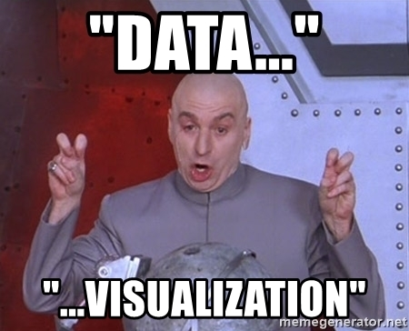
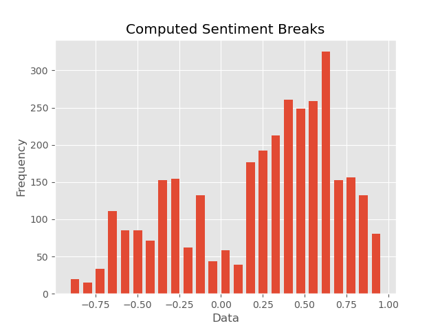
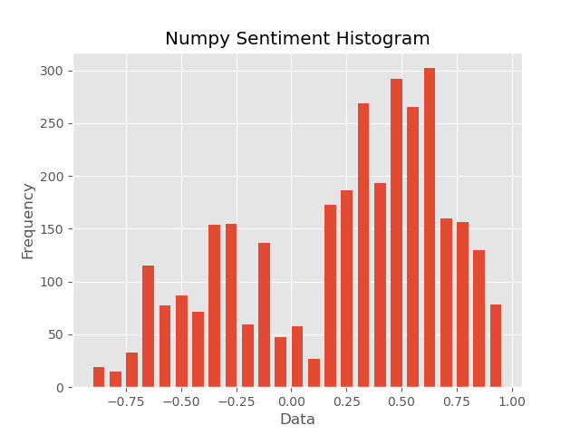

This series is me chronicling my adventure making a data pipeline. This pipe is outlined on GitLab here in the readme: https://gitlab.com/davleifer/polarbearGIS
This is the thirteenth part in a series used to build my website: https://www.davidjleifer.com/
Part 1: https://www.davidjleifer.com/blogs/part1.html
Part 2: https://www.davidjleifer.com/blogs/part2.html
Part 3: https://www.davidjleifer.com/blogs/part3.html
Part 4: https://www.davidjleifer.com/blogs/part4.html
Part 5: https://www.davidjleifer.com/blogs/part5.html
Part 6: https://www.davidjleifer.com/blogs/part6.html
Part 7: https://www.davidjleifer.com/blogs/part7.html
Part 8: https://www.davidjleifer.com/blogs/part8.html
Part 9: https://www.davidjleifer.com/blogs/part9.html
Part 10: https://www.davidjleifer.com/blogs/part10.html
Part 11: https://www.davidjleifer.com/blogs/part11.html
Part 12: https://www.davidjleifer.com/blogs/part12.html
Part 13: https://www.davidjleifer.com/blogs/part13.html
Part 14: https://www.davidjleifer.com/blogs/part14.html
This will be building on what we did in part 9 and 10 for our Polar Vortex application. We need to make a summary of our data so we can more easily view the distribution of the sentiment analysis scores. To do this, we will be using a package written in Python by Dr. Carson Farmer called streamhist: https://github.com/carsonfarmer/streamhist.
Pesky streaming data, always adding more data onto our data. How would we ever visualize such a thing? You need streamhist, a neat package that updates the bin size as data arrives from the data collection server.
Part 1: Installing Streamhist, importing the libraries and setting our paths up
We will first need to install streamhist, which is available through pip. You only have to know the location of the python path:
/Applications/QGIS-LTR.app/Contents/MacOS/bin/python3.8 -m pip install streamhist
We will also need the libraries numpy, matplotlib, functools, pandas, os, and glob. The next part of the script gets the current working directory and sets it to the variable cwd. This was designed to run in polarbearGIS, so we concatenate the current working directory variable to the folder string data/polar_radar_unsplit as a variable named folders. We then make a variable named all_files, which utilizes glob to make a list of all the files ending with geo_sent.json. The wildcard * is the key here.
import numpy as np
import matplotlib.pyplot as plt
plt.style.use("ggplot") # Makes for nicer looking plots
try:
from functools import reduce
except ImportError:
pass
from streamhist import StreamHist
from numpy import histogram, allclose
import pandas as pd
import os
from glob import glob
#from mpld3 import save_html
#gotta add cwd in server version after testing
cwd = os.getcwd()
folders = cwd + "/data/polar_radar_unsplit"
#folders = "/Users/davidleifer/Documents/20170101-20190604/Geog531/Assignment2/data/polar_radar_unsplit"
all_files = glob(os.path.join(folders, "*geo_sent.json"))
Part 2: Setting up a for loop and converting our list of json into one numpy array
Next we need to set up a for loop and loop over the all_files list variable with another variable called json_files. Before we do this, we setup an empty np.array list called numpy_of_compound_json. This will be our numpy array that we append the arrays of compound scores to. The first part of the for loop will make a variable named json which reads in each of our json_file paths with pandas read_json method. Then we make a variable named json_comp which holds the json compound score, which is just a column. We replace the zeros with numpy’s “not a number” (or nan) and call it json_naned. We then drop those nan and set the result to a variable named json_no_nan. Next we convert the json_no_nan variable to a numpy array and call it compound_json. Finally, we switch from using pandas methods to numpy and concatenate the arrays into our empty variable numpy_of_compound_json.
#read json, convert 0 to nan, drop nan, append json files to list_of_compound_json,
numpy_of_compound_json = np.array([])
for json_files in all_files:
json = pd.read_json(json_files)
json_comp = json['compound']
json_naned = json_comp.replace(0.000, np.nan)
json_no_nan = json_naned.dropna(how='all', axis=0)
compound_json = json_no_nan.to_numpy()
numpy_of_compound_json = np.concatenate([numpy_of_compound_json, compound_json])
Part 3: Data visualization with streamhist
Now comes the fun part!

From the package itself:
This project is an implementation of the streaming, one-pass histograms described in Ben-Haim's Streaming Parallel Decision Trees. The histograms act as an approximation of the underlying dataset. The histogram bins do not have a preset size, so as values stream into the histogram, bins are dynamically added and merged as needed. One particularly nice feature of streaming histograms is that they can be used to approximate quantiles without sorting (or even individually storing) values.
The interesting bit is in the c1 and c2 variables, which compute bin size with list comprehensions based on the streamhist package’s method compute_breaks and the StreamHist() function. The rest is matplotlib to make the chart look nice.
#create histogram of json
length = numpy_of_compound_json.shape[0]
bins = 25
h9 = StreamHist().update(numpy_of_compound_json)
hist1, bins1 = h9.compute_breaks(bins)
hist2, bins2 = histogram(numpy_of_compound_json, bins=bins)
if allclose(bins1, bins2):
print("The bin breaks are all close")
if allclose(hist1, hist2, rtol=1, atol=length/(bins**2)):
print("The bin counts are all close")
width = 0.7 * (bins2[1] - bins2[0])
c1 = [(a + b)/2. for a, b in zip(bins1[:-1], bins1[1:])]
c2 = [(a + b)/2. for a, b in zip(bins2[:-1], bins2[1:])]
plt.figure(figsize=(2, 2))
f, (ax1, ax2) = plt.subplots(1, 2, sharey=False, figsize=(2, 2))
fig = plt.figure()
plt.bar(c1, hist1, align='center', width=width)
plt.title("Computed Sentiment Breaks")
plt.ylabel("Frequency")
plt.xlabel("Data")
plt.savefig(cwd + '/data/Breaks.png')
#save_html(fig,"/scripts/python_weather/Breaks.html")
fig2 = plt.figure()
plt.bar(c2, hist2, align='center', width=width)
plt.title("Numpy Sentiment Histogram")
plt.ylabel("Frequency")
plt.xlabel("Data")
plt.savefig(cwd + '/data/Histogram.png')
#save_html(fig2,"/scripts/python_weather/Histogram.html")
We end up saving the histogram plot as an image but you can also save it as an html file using the package mpld3. In the next step, I use the histograms in a web application and since mpld3 is based on SVG, I found it a pain to resize the output html files. They looked nice on desktop but 67% of my traffic comes from mobile devices, so I opted to use basic images.
Step 4: Including the .png in our web application
It’s just two img src and two div lol. You can also insert html via an iframe or even with a jQuery .get or .load method.
<div class="center" height="500px" width="100%" position="absolute"> <img src="../data/Histogram.png" width="100%"> </div> </br> <div class="center" height="500px" width="100%" position="absolute"> <img src="../data/Breaks.png" width="100%"> </div> 

Further Direction: GeoStreamable
The next logical step is building the GeoStreamable application as outlined in the readme of this project. The data collection script will be continuously running to collect tweets about a low key subject so I don’t get destroyed in CPU fees. Might need to cap the directory to a certain size and delete older files.
We would also need to run the streamhist script every few minutes to update the histogram image, along with a BASH script to move the files around on the server. We would also need the sentiment analysis and geocoder script to run every few minutes to geocode and get the sentiment of the tweets coming in. We would need to update the web application to include a popup info window to display the contents of the tweet but not the user (at least I think you can do that, I’d have to reread the terms of the tweepy API).
That’s really all that’s left, just server rules. Might be easy. Might also be super expensive. Might just make this as a proof of concept. This would be so much easier with my own server but then I’d need a static IP.
This series is me chronicling my adventure making a data pipeline. This pipe is outlined on GitLab here in the readme: https://gitlab.com/davleifer/polarbearGIS
This is the thirteenth part in a series used to build my website: https://www.davidjleifer.com/
Part 1: https://www.davidjleifer.com/blogs/part1.html
Part 2: https://www.davidjleifer.com/blogs/part2.html
Part 3: https://www.davidjleifer.com/blogs/part3.html
Part 4: https://www.davidjleifer.com/blogs/part4.html
Part 5: https://www.davidjleifer.com/blogs/part5.html
Part 6: https://www.davidjleifer.com/blogs/part6.html
Part 7: https://www.davidjleifer.com/blogs/part7.html
Part 8: https://www.davidjleifer.com/blogs/part8.html
Part 9: https://www.davidjleifer.com/blogs/part9.html
Part 10: https://www.davidjleifer.com/blogs/part10.html
Part 11: https://www.davidjleifer.com/blogs/part11.html
Part 12: https://www.davidjleifer.com/blogs/part12.html